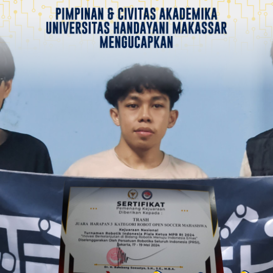
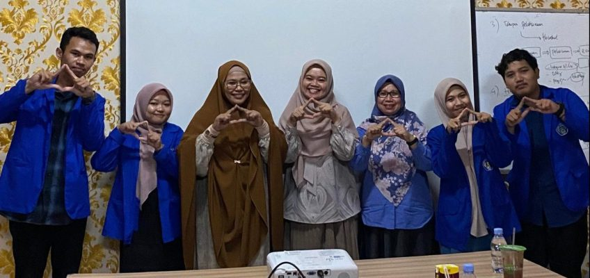

Sejarah Kampus
Yayasan Pendidikan Handayani didirikan oleh Dr H.A.Moh.Alifuddin.M.,M.Kom, sejak tanggal
31 januari 1996 berdasarkan akta no.20 notaris Mahmud Said ,S.H. di Ujung Pandang. Sekolah TinggI
Manajemen Informatika dan Komputer (STMIK) Handayani didirikan dengan surat keputusan menteri pendidikan
nasional Republik Indonesia nomor 37/D/0/1996 tanggal 21 Juni 1996, dan pada Tahun 2022 berubah menjadi
UNIVERSITAS HANDAYANI MAKASSAR Sesuai Surat keputusan menteri Pendidikan, kebudayaan, Riset dan Teknologi
nomor 497/E/0/2022 tanggal 13 Juli 2022.Kampus Universitas Handayani Makassar tepatnya di Jl.adyaksa Baru No.1 Makassar, Sul sel
Visi
Menjadi Universitas unggul menghasilkan Sumberdaya Manusia Technopreneurship Tahun 2047
Visi ini diuraikan sebagai berikut:
Yang unggul merupakan perguruan tinggi yang memiliki keunggulan dibidang teknologi informasi dan kewirausahaan. Lulusan yang memiliki karakter dan berkeperibiadian.
Manusia adalah lulusan yang menguasai kompetensi dibidang informatika, administrasi publik, hukum, dan berjiwa enterpreneuship.
Technopreneurship adalah kemampuan untuk mengubah setiap peluang, menjadi usaha bisnis yang berbasis teknologi Informasi.
Teknologi Informasi adalah teknologi yang digunakan dalam mengolah data, memproses data, memperoleh, menyusun, menyimpan, dan mengubah data untuk mendapatkan informasi yang bermamfaat serta berkualitas.
Misi
Pendidikan Tinggi melalui sistem pendidikan dan pengajaran yang bermutu bercirikan Technoprenership;
Penelitian dalam bidang Technoprenership yang dapat menciptakan lapangan kerja baru;
Mengembangkan kegiatan pengabdian kepada masyarakat melalui penerapan ilmu pengetahuan dan teknologi untuk kesejahteraan masyarakat;
Meningkatkan kualitas kerjasama untuk kemandirian penyelenggaraan pendidikan tinggi; dan
Menyelenggarakan tata pamong dan tata kelola Universitas yang sehat (good university governance) kredibel, transparan, akuntabel, bertanggung jawab, dan adil dalam pelaksanaan otonomi perguruan tinggi.
Profil Rektor dan Dekan
REKTOR UNIVERSITAS HANDAYANI MAKASSAR
Nama : Prof. Dr.Eng Muh.Rahmatullah Syarifuddin
Tempat Tanggal Lahir : Sungguminasa, 3 Agustus 2004
Agama : Islam
Jenis Kelamin : Laki-laki
Pendidikan :
S1 Teknik Informatika University Of Glaslow
S2 Sistem Komputer University Of York
S3 Sistem Komputer di The University of Kitakyushu
Email : muhrahmatullah@gmail.com
DEKAN FAKULTAS ILMU KOMPUTER
Nama : Dr.Eng. Nurmah Udin,S.Kom,M.Kom
Tempat Tanggal Lahir : Samarinda, 12 Maret 2004
Agama : Islam
Jenis Kelamin : Perempuan
Pendidikan :
S1 Teknik Informatika di Universitas Handayani Makassar
S2 Teknik Sistem Komputer di Universitas Handayani Makassar
S3 Sistem Komputer di The University of Kitakyushu
Email : nrmaaudiin@gmail.com
DEKAN FAKULTAS HUKUM
Nama : Anniza Marzuki,S.H,M.H
Tempat Tanggal Lahir : Bulukumba, 19 Mei 2004
Agama : Islam
Jenis Kelamin : Perempuan
Pendidikan :
S1 HUKUM di Universitas Hasanuddin
S2 HUKUM di Universitas Muslim Indonesia
Email : annizamarzuki2004@gmail.com
DEKAN FAKULTAS ILMU SOSIAL
Nama : Nurhadijah,S.A.P,M.A.P
Tempat Tanggal Lahir : Bulukumba, 02 Maret 2003
Agama : Islam
Jenis Kelamin : Perempuan
Pendidikan :
S1 Administrasi Publik di Universitas Negeri Gorontalo
S2 Administrasi Publik di Universitas Hasanuddin
Email : nurhadijah0303@gmail.com

DIREKTUR PASCASARJANA
Nama : Dr.Eng. Andre Prayogi
Tempat Tanggal Lahir : Enrekang, 02 Maret 2003
Agama : Islam
Jenis Kelamin : Laki-laki
Pendidikan :
S1 Sistem Komputer di Universitas Haluoleo Kendari
S2 Administrasi Publik di Universitas Handayani Makassar
S3 Sistem Komputer di The University of Kitakyushu
Email : andreprayogi@gmail.com
Berita Terbaru

Team Robotika Trash UHM meraih juara harapan 3 di Turnamen PRSI ( Persatuan Robotik Seluruh Indonesia)
Jakarta. Trash Universitas Handayani makassar mengikuti kompetisi Turnamen Robotik Indonesia piala ketua MPR RI dengan mengusung tema inovasi berkelanjutan dibidang robotika menuju indonesia Emas.
Sebanyak 400 peserta dari seluruh Indonesia, berasal dari berbagai institusi, bersaing dalam Kompetisi Robotika 2024 Piala Ketua MPR RI.
Turnamen yang diselenggarakan oleh Persatuan Robotika Seluruh Indonesia (PRSI) ini diadakan di GOR Padepokan Pencak Silat Taman Mini Indonesia Indah (TMII) Jakarta Timur mulai hari ini Jumat (17/5/2024) hingga Minggu (19/5/2024)

Monev Internal Universitas Handayani Makassar Terhadap Tim PKM Penerims Dana Belmawa 2024
Monitoring dan Evaluasi (Monev) Internal diselenggarakan oleh Universitas Handayani makassar terhadap tim Program kreativitas Mahasiswa ( PKM) yang lolos pendanaan dalam dana Belmawa 2024 yang dilaksanankan diaula Universitas Handayani Makassar senin 15 juli 2024.
Wakil rektor UHM Sitti Zuhriyah S.Pd.,M.Si mengungkapkan Monev internal ini bertujuan sebagai salah satu alat kontrol pelaksanaan kegiatan PKM yang berjalan dan sekaligus evaluasi penerima dana PKM tentang kegiatan yang telah dilakukan.Monev internal yang merupakan agenda rutin kali ini menghadirkan Reviewer dari Universitas Muslim Indonesia Ir. St Hajrah Mansyur, S.Kom.,M,Cs.,MTA dan Dosen dari UHM Herlina, S.Kom.,M.si,kegiatan ini berlangsung selama satu hari dengan agenda presentasi dan pemaparan dari kedua team Program Kreativitas Mahasiswa yang terdiri dari tim PKM-KI dan team PKM-KC serta di dampingi oleh Masing masing Dosen Pembimbing sitti zuhriyah dan Dr. Eng Hazriani, S.Kom.,MT berdasarkan hasil monev kedua team telah melaksanakan kegiatan sesuai dengan target dengan capaian diatas 80 %.
Kegiatan Lokakarya Peraturan MBKM
Sabtu, 20 Juli 2024, Pascasarjana, Universitas Handayani Makassar melakukan Kegiatan Lokakarya Peraturan MBKM dibuka oleh Dekan Fikom Dra.Najirah Umar.,.S.Kom.,M.T beliau Mengatakan bahwa saat ini proses belajar mengajar sudah berubah, mahasiswa tidak lagi mesti belajar dikampus serta seluruh kegiatan mahasiswa diluar dikampus bisa dikonversi ke kegiatan akademik dan ini penting dipahami oleh kita bersama. Hal ini terkait juga dengan peraturan MBKM.
Pemateri pada kegiatan Lokakarya ini adalah Ir. Billy Eden William Asrul.,S.Kom.,MT, Berdasarkan Permendikbud-Ristek No 53 / 2023 penjaminan mutu perguruan tinggi pemateri menuturkan ada beberapa bentuk kegiatan pembelajaran yang dilakukan dalam bentuk kuliah, responsi tutorial, seminar, praktek bisa dikonversi dalam mata kuliah,beliau juga menambahkan tentang tujuan MBKM yang tidak hanya tentang peningkatan hard skill tapi juga ditunjang dengan soft skillnya, semua ini tujuannya adalah menyiapkan lulusan sebagai pemimpin masa depan dan bangsa yamg unggul. Kegiatan ini ditutup dengan sesi tanya jawab antara audience dan kaprodi dari Universitas Handayani Makassar.